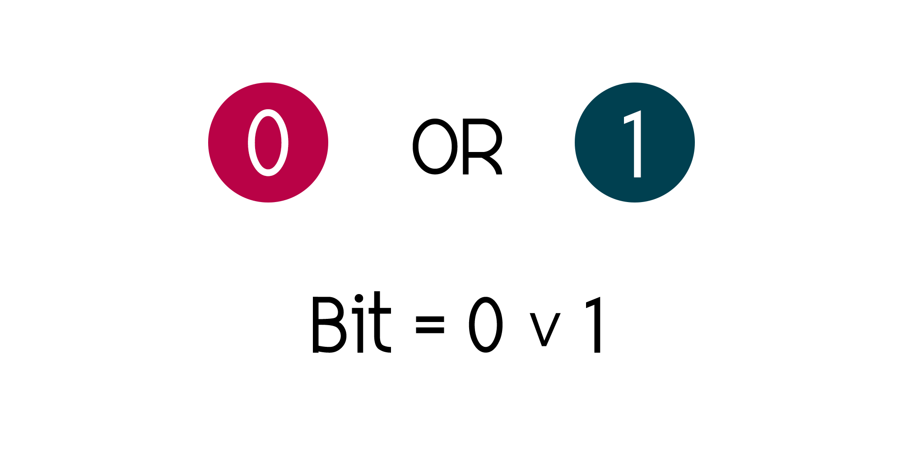
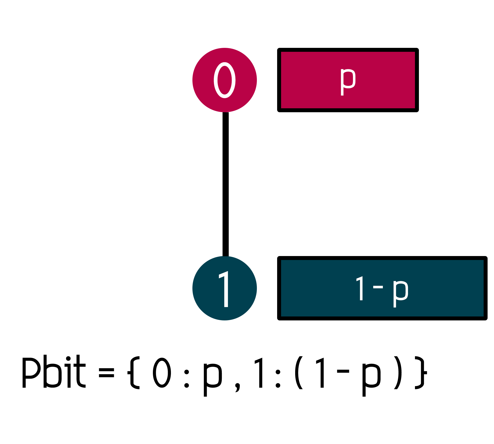
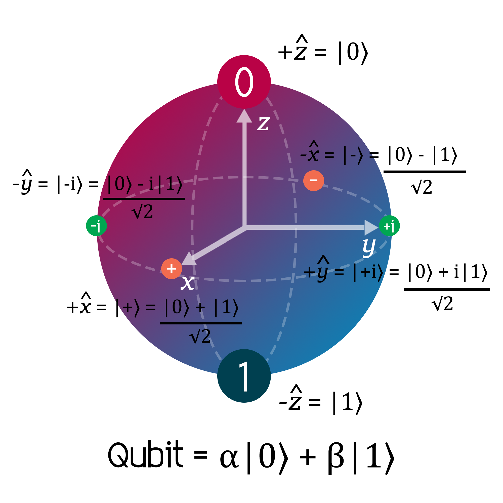
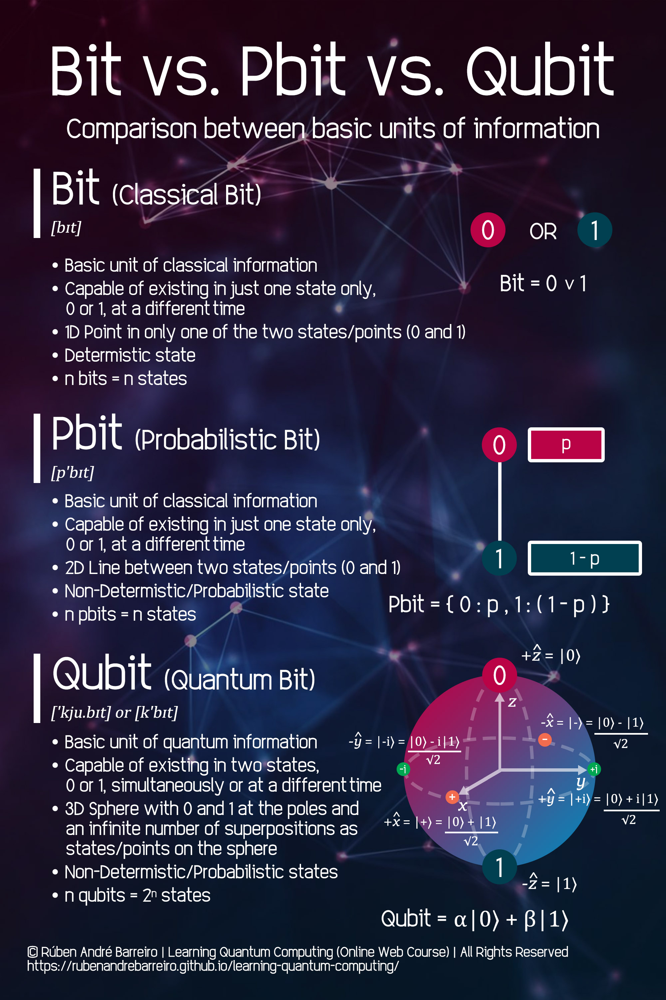
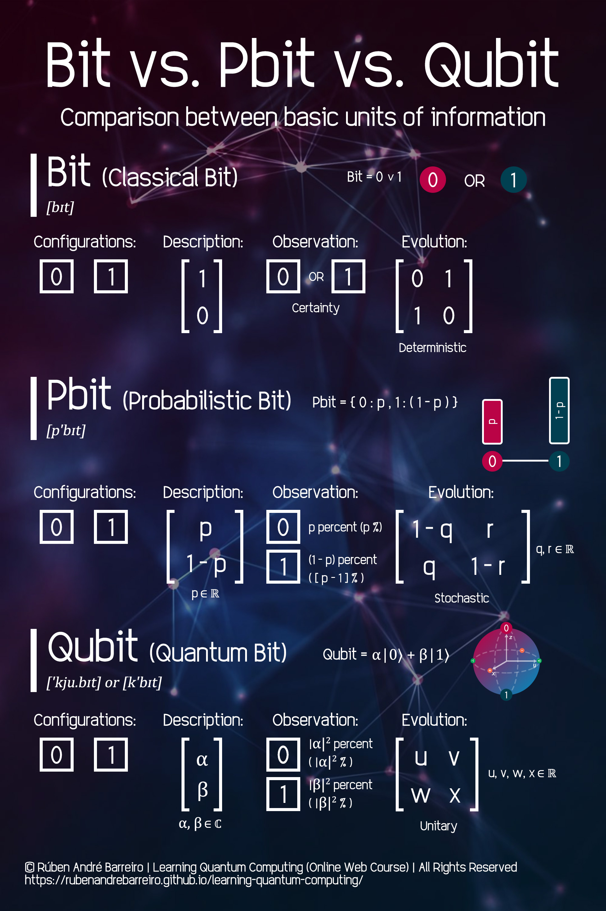

- Quantum Subsystems (Represented as Qubits)
- Quantum Superposition of States
- Quantum Superposition through Practical Experiments/Examples
- Quantum Entanglement of States
- Quantum Teleportation
- Reversibility of Quantum Subsystems
- Initialisation of Quantum Subsystems
- Quantum Operations (Quantum Logic Gates)
- Quantum Systems (Represented as Quantum Circuits)
- Uncertainty Principle (in Quantum States)
- Quantum Measurement of States
- Quantum Coherence and Decoherence
- Rutherford's Scattering
- Quantum Parallelism
- Existence of Quantum Multiverse
- This week will contain theoretical lectures and practical exercises
-

- This work is licensed under a Creative Commons Attribution-NonCommercial-NoDerivatives 4.0 International License.

📍 Select a topic:
⚠️ Notes:
©️ License:
The Fundamentals of Quantum Computing (Week 7)
Core 1 - Introduction to Quantum
 Rúben André Barreiro
Rúben André Barreiro
Quantum Subsystems (Represented as Qubits)
-
In an ordinary Classical RAM hardware module, the common Quantum State of several electrons is interpreted as only one Classical Bit.
-
The logical state is determined by the expectation value of its register contents (i.e., tension of a capacitor).
-
The interpretation as Classical Bits is performed by comparing the measured value to a defined threshold, while the great number of particles guarantees that the uncertainty of the measurement is small enough
( O(\(\frac{1}{\sqrt{n}}\) ) ) to make errors practically impossible. -
\(P(Errors \ in \ Classical \ Computations) =\ 10^{-9}\), i.e., the acceptable minimum values for B.E.R. (Bit Error Rate).
-
\(P(Errors \ in \ Quantum \ Computations) =\ 10^{-3}\), i.e., the current acceptable minimum values for Q.B.E.R. (Quantum Bit Error Rate).
-
In a Quantum Computer, theinformation is represented directly as the common Quantum State of many Quantum Subsystems (i.e., Qubits or Quantum Bits).
-
Each Quantum Subsystem is described by a combination of two "pure" states ("pure" basis) interpreted as \(\left |0 \right>\) and \(\left |1 \right>\).
-
This combinations can be made by many forms, like per example:
-
Spin of a Particle:


-
Polarisation of a Photon:

-
Ground and Excited States of an Ion:


-
Spin of a Particle:
Quantum Superposition of States


Quantum Superposition through Practical Experiments/Examples
-
Schrödinger's Cat Practical Experiment:
-
-
Flipping a Coin Experiment:
-
-
Star Wars' Force Balance Example:
-
-
Bruce Wayne's Dilemma Example:
-
-
Iron Man Saving the World:
-
-
Harry Potter and Sorting Hat's Dilemma:
-
-
Pringles' Paradox Example (Chips or Hyperbolic Paraboloids?):
-
-
Bagel, Pizza and Donut's Paradox Example:
-
-
Cylinder's Paradox Example:
-
-
Mixing Colors Example:
-


What is Data?
-
Data (or singular datum) are individual units of information.
-
Data describes a single quality or quantity of some object or phenomenon
-
In analytical processes, data are represented by variables.
-
Although the terms "data", "information" and "knowledge" are often used interchangeably, each of these terms has a distinct meaning.
-
In popular publications, data is sometimes said to be transformed into information when it is viewed in context or in post-analysis.
-
Data is measured, collected and reported, and analyzed, whereupon it can be visualized using graphs, images or other analysis tools.
-
Data as a general concept refers to the fact that some existing information or knowledge is represented or coded in some form suitable for better usage or processing.
-
Raw data ("unprocessed data") is a collection of numbers or characters before it has been "cleaned" and corrected by researchers.
-
Data processing commonly occurs by stages, and the "processed data" from one stage may be considered the "raw data" of the next stage.
-
Experimental data is data that is generated within the context of a scientific investigation by observation and recording.
What is Knowledge?
Classical Information
Classical Units of Information
What is a Bit?
Classical Data Storage
Practical Examples of Used Sizes of Units of Classical Information
Classical Information Theory
Quantum Information
Quantum Units of Information
What is a Qubit?
Quantum Data Storage
Bit vs. Pbit vs. Qubit - Comparison Between Some Basic Units of Information
-
Bit (Classical Bit) [bit]:

-
Basic Unit of Classical Information
-
Capable of existing in just one state only, 0 or 1, at a different time;
-
1D Point in only one of the two states/points (0 and 1);
-
Determistic state;
-
n bits = n states;
-
Formula:
\begin{aligned}[left*] Bit &= \{ \ 0 \ ∨ \ 1 \ \}\hspace{400ex} \end{aligned} -
Other Properties:
\begin{aligned} Configurations &= \begin{array}{|l|} \hline 0\\ \hline \end{array} \hspace{1ex} \begin{array}{|l|} \hline 1\\ \hline \end{array}, \\ \\ Description &= \begin{bmatrix} 1 \\ 0 \end{bmatrix}, \\ \\ Observation &= \begin{array}{|l|} \hline 0\\ \hline \end{array} \hspace{1ex} OR \hspace{1ex} \begin{array}{|l|} \hline 1\\ \hline \end{array}\hspace{1ex}(Certainty), \\ \\ Evolution &= \begin{bmatrix} 0 & 1 \\ 1 & 0 \end{bmatrix}\hspace{0.5ex}(Deterministic).\hspace{400ex} \end{aligned}
-
-
Pbit (Probabilistic Bit) [p'bit]:

-
Uses the Bit (Basic Unit of Classical Information), as his basis, in a random fashion;
-
Capable of existing in just one state only, 0 or 1, at a different time;
-
2D Line between only one of the two states/points (0 and 1);
-
Non-Determistic/Probabilistic state;
-
n pbits = n states;
-
Formula:
\begin{aligned}[left*] Pbit &= \{ \ 0 \ : \ p \ , \ 1 \ : \ ( \ 1 \ - \ p \ ) \ \}\hspace{400ex} \end{aligned} -
Other Properties:
\begin{aligned}[left*] Configurations &= \begin{array}{|l|} \hline 0\\ \hline \end{array} \hspace{1ex} \begin{array}{|l|} \hline 1\\ \hline \end{array}, \\ \\ Description &= \begin{bmatrix} p \\ 1 - p \end{bmatrix}\hspace{0.5ex}( \ p \in \mathbb{R} \ ), \\ \\ Observation &= \begin{array}{|l|} \hline 0\\ \hline \end{array} \hspace{0.8ex}(p \ \%) \hspace{1ex} OR \hspace{1.4ex} \begin{array}{|l|} \hline 1\\ \hline \end{array} \hspace{0.8ex}( \ [ \ 1 \ - \ p \ ] \ \% \ ), \\ \\ Evolution &= \begin{bmatrix} 1 - q & r \\ q & 1 - r \end{bmatrix}\hspace{0.5ex}( \ q,\ r \in \mathbb{R} \ )\hspace{0.5ex}(Stochastic). \hspace{400ex} \end{aligned}
-
-
Qubit (Quantum Bit) ['kju.bit] or [k'bit]:

-
Basic Unit of Quantum Information;
-
Capable of existing in two states, 0 or 1, simultaneously or at a different time;
-
3D Sphere (usually represented by a Bloch Sphere) with 0 or 1 at the poles and an infinite number of superpositions as states/points on the sphere;
-
Non-Determistic/Probabilistic states;
-
n qubits = 2n states (=) log2(n) qubits = n states;
-
Formula:
\begin{aligned}[left*] Qubit &= α\left| 0 \right> + β\left| 1 \right>\hspace{400ex} \end{aligned} -
Other Properties:
\begin{aligned}[left*] Configurations &= \begin{array}{|l|} \hline 0\\ \hline \end{array} \hspace{1ex} \begin{array}{|l|} \hline 1\\ \hline \end{array}, \\ \\ Description &= \begin{bmatrix} α \\ β \end{bmatrix}\hspace{0.5ex}( \ α,\ β \in \mathbb{C} \ ), \\ \\ Observation &= \begin{array}{|l|} \hline 0\\ \hline \end{array} \hspace{0.8ex}( \ |α|^2 \ \% \ ) \hspace{1ex} AND \hspace{1.4ex} \begin{array}{|l|} \hline 1\\ \hline \end{array} \hspace{0.8ex}( \ |β|^2 \ \% \ ), \\ \\ Evolution &= \begin{bmatrix} u & v \\ w & x \end{bmatrix}\hspace{0.5ex}( \ u,\ v,\ w,\ x \in \mathbb{R} \ )\hspace{0.5ex}(Unitary).\hspace{400ex} \end{aligned}
-
 